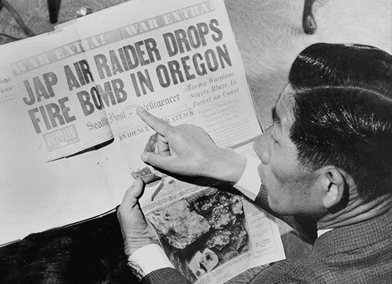
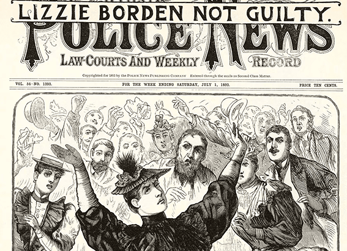

NATIONAL GEOGRAPHIC
This wild African cat has adapted to life in a big city surprisingly well
ANIMAL
Cape Town’s streetlights blinked below, while the sheer rockface of Table Mountain rose on one side. We stood still, expecting the animal to retreat. Instead, he trotted right past us, the pool of light from our lowered headlamps illuminating his burnt orange coat; round, pale eyes; and distinctive large, pointed ears topped with long black tufts. Pausing for a brief backward glance, the leggy feline vanished into the bushes.
We knew immediately it was Hermes a caracal habituated to humans that’s often spotted by hikers and trail runners around the 61,776-acre Table Mountain National Park, which is within the city limits of the South African capital. The caracal, believed to be four to five years old, has become something of a poster animal for wildlife conservation in Cape Town, a city on the Cape Peninsula whose population has grown from 1.1 million in 1970 to 4.7 million today. The seaside metropolis, with its mountain in the middle of the city, hosts a plethora of urban wildlife, from baboons to snakes to penguins.
Shy, usually nocturnal cats found in various landscapes across Africa and Asia, caracals are not in danger of extinction. But caracals in Cape Town are notable in another way: They’re the area’s apex predator, since leopards were hunted off the Cape Peninsula in the early 20th century. Native to the peninsula, caracals have only recently been recorded venturing into more urban areas, likely drawn by easy to catch prey such as Southern African vlei rats and guinea fowl, says Gabriella L eighton, a researcher at the University of Cape Town who led a recent paper on caracal behavior. Scientists estimate there are probably around 60 caracals on the Cape Peninsula at any given time.
As the striking, 1.5-foot-tall felines have become accustomed to people, they’ve been spotted throughout the city’s natural areas, from heavily trafficked hiking trails to the Kirstenbosch Botanical Garden to popular Clifton Beach at sunset.
Many of the cats especially those in the northern, more developed part of Table Mountain (where I encountered Hermes) prefer to hunt around the urban edge, which includes suburbs, roads, and vineyards. This is risky, however, since such areas pose threats to the animals, particularly getting hit by cars the leading cause of death for Cape Town caracal. The cats face other pressures, to a lesser extent, from poisons, dog attacks, and snares, says Laurel Serieys, a wildlife biologist at the conservation organization Panthera, who founded the University of Cape Town’s Urban Caracal Project in 2014. A lack of genetic diversity, due to the urban development hemming the animal in, is also a major threat for the caracal’s future in the city, she says.
Even so, caracals “can adapt to human activity in ways that were not expected,” says Serieys, such as adjusting their behavior to avoid being seen by people in busy areas “That was a very cool surprise.”
Laying the groundwork
Prior to 2014, no one had studied the peninsula’s caracals, Serieys says, in large part because people doubted they were even there. She had to convince South African National Parks to grant her a permit to study a population they didn’t think existed on Table Mountain.
Since then, Serieys and colleagues have learned more about the urban cats’ movements, diet, genetics, and threats. They’ve fitted 26 caracals with GPS collars, conducted necropsies, set up camera traps around the city, and collected photos and videos of caracal sightings from the public.
“Just getting on the ground and learning what’s there, and what threats exist to those animals is important,” Serieys says.
So far, their results show that vehicle collisions accounted for more than 70 percent of recorded caracal deaths in Cape Town between 2015 and 2020. Poison is another hazard: Ninety-two percent of dead caracals that Serieys tested had consumed anticoagulant rodenticides, an often fatal exposure.
Caracals get caught in snares set to catch smaller prey items, or fall victim to dogs, which can also pass on diseases such as canine parvovirus, according to Serieys.
To reduce vehicle strikes of caracals, in January, the project team installed reflective caracal signs along seven common roadkill sites in Cape Town, though they’ve yet to collect data to show if it’s working to reduce deaths. The team has also suggested that the city put in speed bumps at frequent caracal-crossing locations.
Comments :
- john Very good
- john Very good
Leave a Reply
Your email address will not be published. Required fields are marked*
Related posts:
-
Pearl Harbor was the only WWII attack on the U.S., right Wrong.
Most of the fighting during World War II took place overseas, destroying much of Europe and Pacific nations in the process. But there are little known instances of Japan and Nazi Germany attacking the American mainland.
View article -
Did Lizzie Borden get away with murder Inside the crime of the 19th century.
Jurors trooped past a gaggle of anxious journalists and bystanders as the superior court in New Bedford, Massachusetts, began what would be considered the crime of the century—the 19th century
View article -
 Meet 5 of the fiercest queens from medieval times
Meet 5 of the fiercest queens from medieval timesDuring the turbulent, pestilent-ridden Middle Ages, kings dominated the Western world, fighting wars, making alliances, and aggressively holding onto their power. But hidden away in the annuls of history
View article